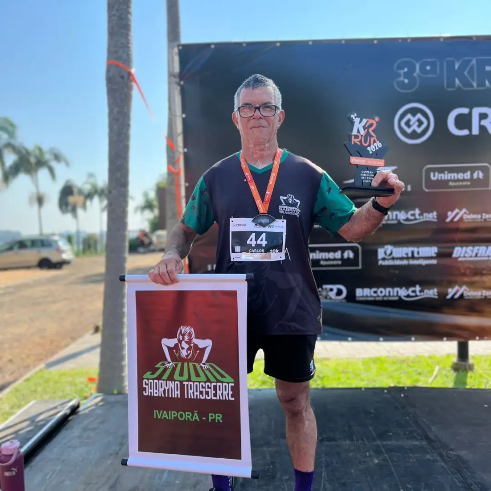

Tive a Minha Vida de Volta
Quando a gente é alcoólatra, a gente não admite. Achamos sempre que o problema está nos outros, mas nunca na gente. Quando decidi que precisava de ajuda, procurei o ARA. Na primeira reunião, fui acolhido com um sincero “Que bom que você veio!”. Hoje, celebro 28 anos de caminhada no ARA. O grupo me devolveu a dignidade, a paz e a minha família.

Membro do ARA Ivaiporã28 anos de sobriedade